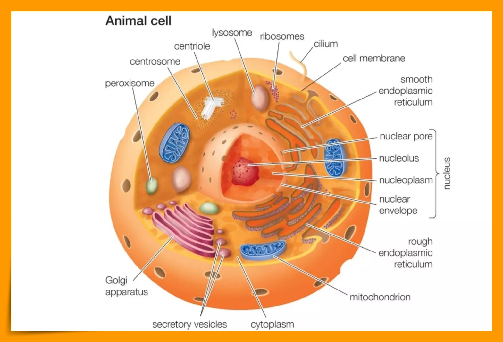
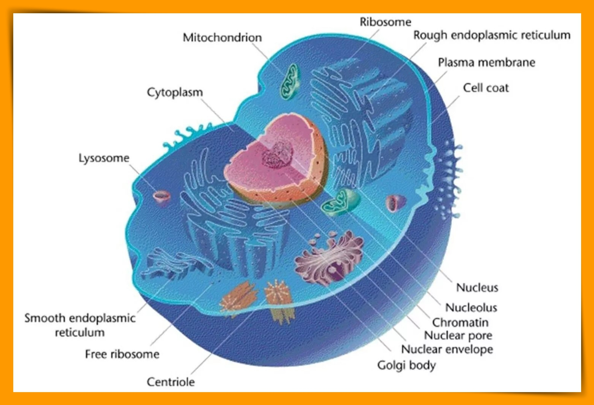

Animal cells are eukaryotic cells or cells with a membrane-bound nucleus. Unlike prokaryotic cells, DNA in animal cells is housed within the nucleus. In addition to having a nucleus, animal cells also contain other membrane-bound organelles, or tiny cellular structures, that carry out specific functions necessary for normal cellular operation. Organelles have a wide range of responsibilities that include everything from producing hormones and enzymes to providing energy for animal cells.

Plant and animal cells are similar in that they are both eukaryotic and have similar types of organelles. Plant cells tend to have more uniform sizes than animal cells.
h
Components of
Animal Cells

The following are examples of structures and organelles that can be found in typical animal cells:
Cell (Plasma) Membrane - thin, semi-permeable membrane that surrounds the cytoplasm of a cell, enclosing its contents.
Centrioles - cylindrical structures that organize the assembly of microtubules during cell division.
Cilia and flagella - specialized groupings of microtubules that protrude from some cells and aid in cellular locomotion.
Cytoplasm - gel-like substance within the cell.
Cytoskeleton - a network of fibers throughout the cell's cytoplasm that gives the cell support and helps to maintain its shape.
Endoplasmic Reticulum - an extensive network of membranes composed of both regions with ribosomes (rough ER) and regions without ribosomes (smooth ER).
Golgi Complex - also called the Golgi apparatus, this structure is responsible for manufacturing, storing and shipping certain cellular products.
Lysosomes - sacs of enzymes that digest cellular macromolecules such as nucleic acids.
Microtubules - hollow rods that function primarily to help support and shape the cell.
Mitochondria - cell components that generate energy for the cell and are the sites of cellular respiration.
Nucleus - membrane-bound structure that contains the cell's hereditary information.
Nucleolus - structure within the nucleus that helps in the synthesis of ribosomes.
Nucleopore - a tiny hole in the nuclear membrane that allows nucleic acids and proteins to move into and out of the nucleus.
Peroxisomes - enzyme containing structures that help to detoxify alcohol, form bile acid, and break down fats.
Ribosomes - consisting of RNA and proteins, ribosomes are responsible for protein assembly.